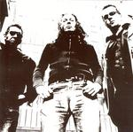

| Artist: | Solar |
| Title: | Dark Places |
| Label: | Verglas VGCD026 |
| Length(s): | 7? minutes |
| Year(s) of release: | 2003 |
| Month of review: | [12/2003] |
| 1) | Cheap Thrill | 3.49 |
| 2) | Psycho | 5.30 |
| 3) | Atrophy | 6.02 |
| 4) | In A Dark Place | 3.26 |
| 5) | Caving In | 7.52 |
| 6) | Mother Of Mother | 8.01 |
| 7) | She Knows | 5.24 |
| 8) | Odyssey (In A Major) | 9.05 |
| 9) | Untouchable | 7.04 |
| 10) | Arizona Dream (Letter To Valou) | 6.56 |
| 11) | Twice As Bright As The Sun | 8.41 |
The band comes more into its own on Psycho. A wonderful vocal melody. Moody and menacing it winds its way, yielding some tense moments, until the song erupts into soaring guitar. A band I often have to think of, especially during the noisier, louder parts is King Black Acid.
Atrophy opens peaceful enough, with acoustic guitar strumming. The vocal melody is okay, but that distinctive. The chorus is better, here emotional shines through. In A Dark Place is a pacier and noisier affair with a good sense of urgency.
Caving In is a song which opens with cello. There is a certain Coldplay like moodiness here, conveyed mainly by the vocals, but the mood created by the cello helps too. The melodies are very good again, and the la-la-la-ooohh chorus accompanied by saxophone is grand (but could possibly have been grander, fuller). The middle part is moodier again, subdued with sensitive and subtle guitar playing. Of course, the song powers up again afterwards, But it all ends subdued with cello.
Mother Of Mother opens repetitively, in a percussive, Middle-Eastern fashion. The melodic vocals are naked on this one, the instruments accompanying in subdued fashion. Then the pace sets in, but the music stays low key, until the rock sets in forcefully and definitively. There is something quite U2 like about it now. She Knows is a moody track in the vein of the first part of the previous track. Dreamy stuff, but also a bit monotonous, except for the emotional outburst. You might be reminded of No-Man here.
With Odyssey (In A Major) we have arrived at the longest track so far. The main gist of the music is by now clear, however. In fact, although the songs are not bad, they tend to sound a bit alike in this middle part. Quite a mellow song in places, but with the necessary outbursts. The middle part is quite dramatic.
Untouchable has a long introduction with spacey acoustic strumming. The sound on the whole album is in fact rather in that vein. The vocals play around with a nice vocal melody, somewhere between Coldplay and Morrisey (The Teachers Are Afraid Of The Pupils).
Arizona Dream (Letter To Valou) opens dreamily with modern rhythms and almost spoken vocals. A somber track, but also light and airey. The guitar noises up towards the end, the vocals vague away. Twice As Bright As The Sun closes down the album. This song comes quite close to the sound of King Black Acid, psychedelic guitar rock, energetic, sweeping. The colour is dreamy and airey again. The vocals are hazy, in the line of Porcupine Tree.
The song material is good, some of the melodies are great and the presentation leaves little to be desired. A small point of criticism is the similar structuredness of many of the songs. Maybe a shorter album would have had more impact.
Whether a band like is actually going to make it big, is however not just a question of quality (if only it were), but also one of money. And if there is not a lot of money behind it, then luck is an absolute necessity. I hope they have it.